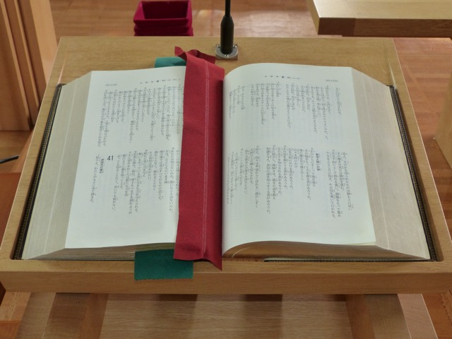

私たちの教会
|
私たちの教団(日本基督教団)
|
|
日本基督教団は、1941年に日本国内における30余の教派が合同して成立しました。
全国に約1700の教会・伝道所と、約20万人の信徒を擁する日本最大のプロテスタント教会です。
|

|
|
|
私たちの信仰(日本基督教団信仰告白)
|
|

|
我らは信じかつ告白す。
旧新約聖書は、神の霊感によりて成り、キリストを証し、福音の真理を示し、教会の拠るべき唯一の正典なり。されば聖書は聖霊によりて、神につき、救ひにつきて、全き知識を我らに与ふる神の言にして、信仰と生活との誤りなき規範なり。
主イエス・キリストによりて啓示せられ、聖書において証せらるる唯一の神は、父・子・聖霊なる、三位一体の神にていましたまふ。御子は我ら罪人の救ひのために人と成り、十字架にかかり、ひとたび己を全き犠牲として神にささげ、我らの贖ひとなりたまへり。
神は恵みをもて我らを選び、ただキリストを信ずる信仰により、我らの罪を赦して義としたまふ。この変らざる恵みのうちに、聖霊は我らを潔めて義の果を結ばしめ、その御業を成就したまう。
教会は主キリストの体にして、恵みにより召されたる者の集ひなり。教会は公の礼拝を守り、福音を正しく宣べ伝へ、バプテスマと主の晩餐との聖礼典を執り行ひ、愛のわざに励みつつ、主の再び来たりたまふを待ち望む。
我らはかく信じ、代々の聖徒と共に使徒信条を告白す。
我は天地の造り主、全能の父なる神を信ず。我はその独り子、我らの主、イエス・キリストを信ず。主は聖霊によりてやどり、処女マリヤより生れ、ポンテオ・ピラトのもとに苦しみを受け、十字架につけられ、死にて葬られ、陰府に くだり、三日目に死人のうちよりよみがへり、天に昇り、全能の父なる神の右に坐したまへり、かしこより来りて、生ける者と死ねる者とを審きたまはん。我は聖霊を信ず、聖なる公同の教会、聖徒の交はり、罪の赦し、身体のよみがへり、永遠の生命を信ず。 アーメン。
|
1958年、日本基督教団大阪教区総会においてプロテスタント・キリスト教の日本宣教100年を記念する事業として奈良の地に教会を建設することが決議され、日本基督教団大和キリスト教会が設立されました。
国内外の多くのキリスト者からあつい祈りと尊い献金が寄せられて新しい町づくりが始まった学園前の地に広大な土地と建物が与えられたのです。
また教会設立と共に近畿各地から多くのキリスト者家庭が周囲の住宅地に移住して集まりクリスチャン村を形成、教会を中心とした町づくりが進められました。
当教会は学園前の町の成長・発展とともに歩んできました。これからもこの地にあって地の塩、世の光として正しい信仰告白に基づいた福音宣教の歩みを続けてまいります。